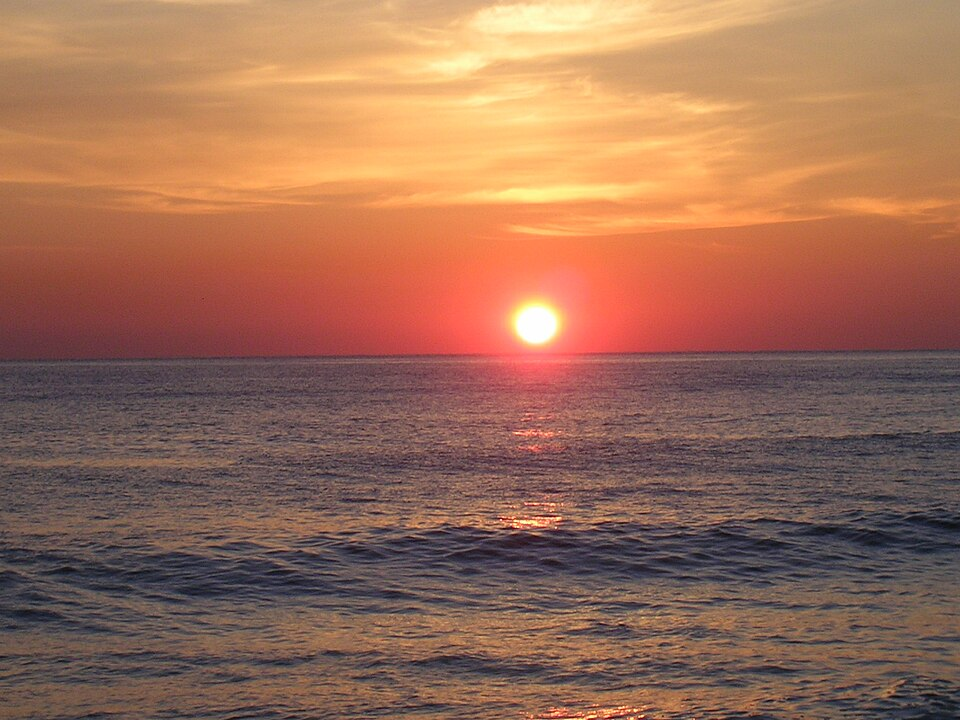
바다뷰가 좋은 캠핑장
바닷가 가까이에서 파도 소리와 함께 쉬어요. 카드 사진은 서해안은 노을, 그 밖의 바다는 일출 분위기를 보여 주는 참고 사진이고, 그 캠핑장에서 찍은 사진이 아니에요. 실제로 보이는 모습은 캠핑장 위치와 방향에 따라 달라요.
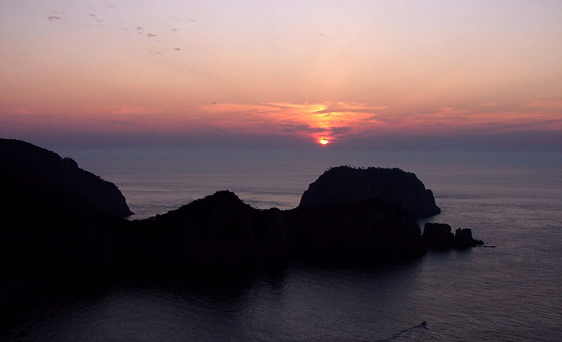
변산반도 고사포 야영장
전북 부안군
약 2km 백사장 옆, 약 300m 길이의 소나무 숲 안에 있어요.
자동차야영지 1박: 평일 20,000원, 주말 30,000원
백사장과 솔숲 실제 사진과 안내 보기 (새 창)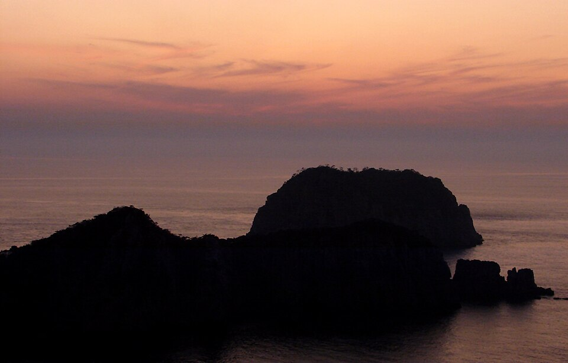
태안해안 학암포 야영장
충남 태안군
약 2km의 넓은 백사장이 있고, 바다가 완만하게 깊어져요.
자동차야영지 1박: 평일 20,000원, 주말 30,000원
넓은 백사장 실제 사진과 안내 보기 (새 창)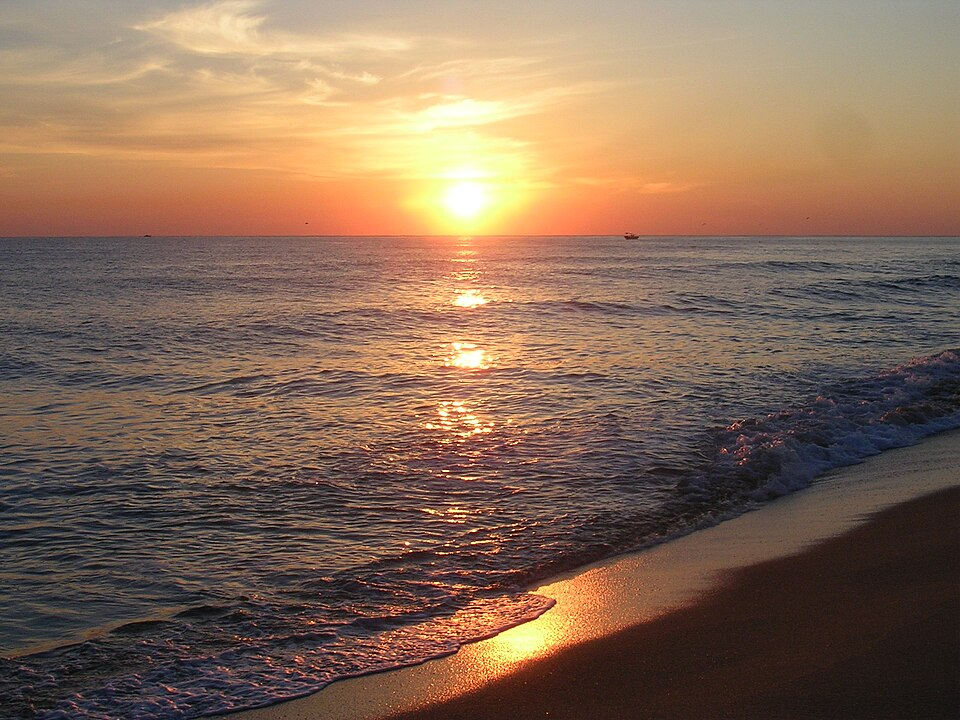
바다가 보이는 부산항 힐링 야영장
부산 동구
옛 부산항 3부두 자리에서 바다와 대형 크루즈를 볼 수 있어요.
일반 1박: 평일·주말 25,000원
항구 바다 풍경 실제 사진과 안내 보기 (새 창)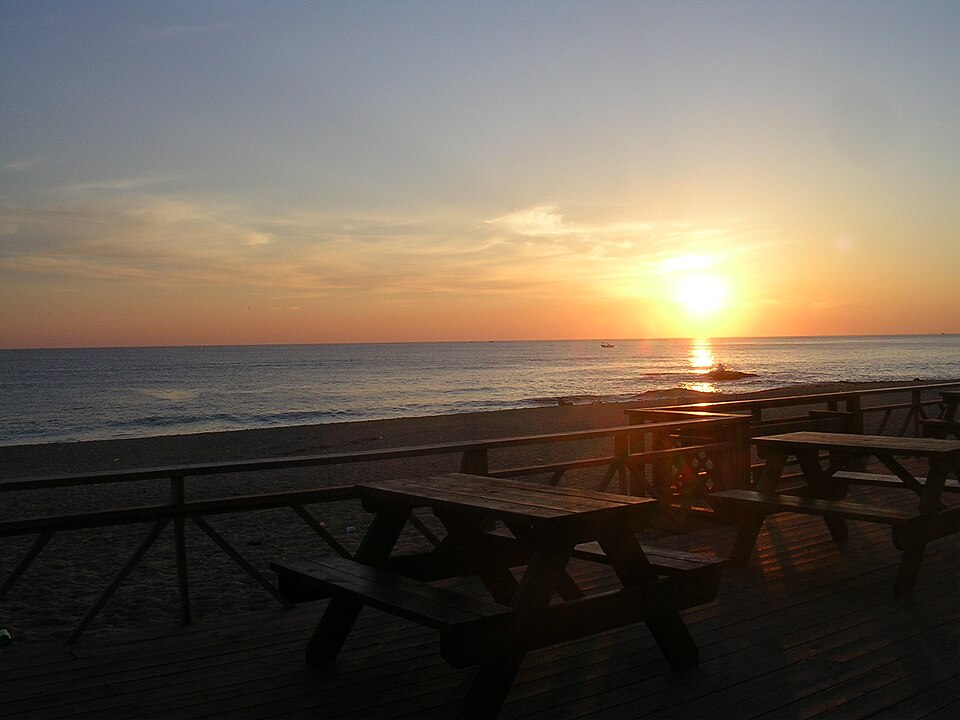
영도 마리노 오토캠핑장
부산 영도구
부산항대교 영도 진입로 아래에 있는 바다 캠핑장이에요.
일반 1박: 평일 20,000원, 주말 25,000원
부산항대교 옆 실제 사진과 안내 보기 (새 창)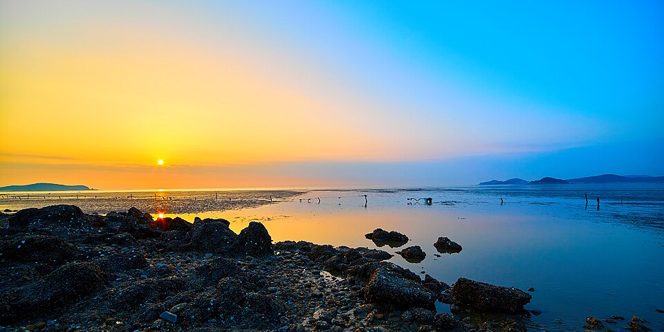
장경리해변 야영장
인천 옹진군
장경리 해수욕장 안에 있고, 해 질 녘 노을이 멋진 곳으로 소개돼요.
일반 1박: 평일·주말 40,000원
서해 노을 실제 사진과 안내 보기 (새 창)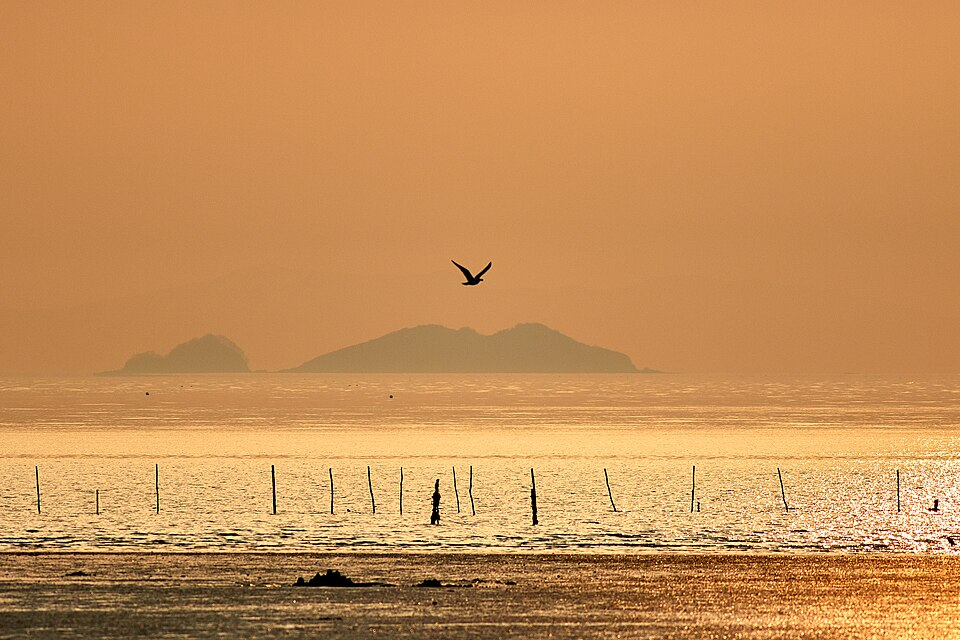
십리포해수욕장 야영장
인천 옹진군
소사나무 숲으로 알려진 십리포해수욕장 안에 있어요. 여름에 운영한다고 등록돼 있어요.
일반 1박: 평일·주말 35,000원
소사나무 숲 실제 사진과 안내 보기 (새 창)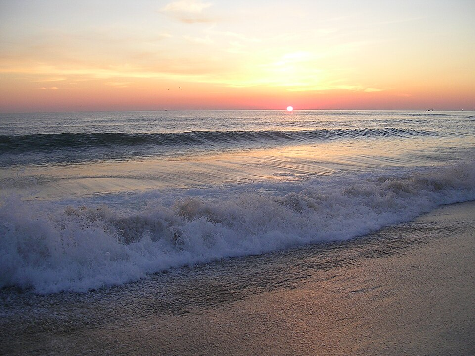
다도해해상 구계등 야영장
전남광주 완도군
다도해해상국립공원 야영장이에요. 일반 자리 14곳과 하우스 5곳이 있어요.
일반형 1박: 평일 9,000원, 주말 12,000원
완도 바닷가 실제 사진과 안내 보기 (새 창)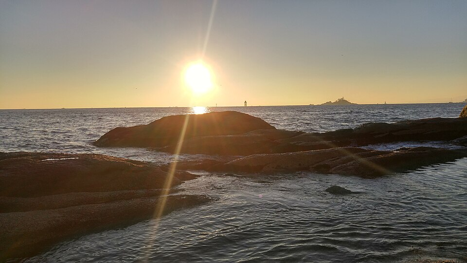
강동오토캠핑장
울산 북구
울산 북구 당사동에 있는 오토캠핑장이에요. 개인 카라반은 쓸 수 없어요.
오토캠핑 1박: 평일 30,000~40,000원, 주말 35,000~50,000원
동해 바닷가 실제 사진과 안내 보기 (새 창)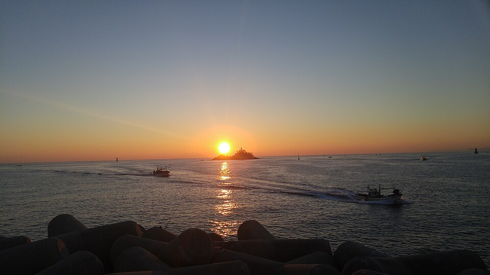
연곡해변 솔향기캠핑장
강원 강릉시
장애인이 이용하기 쉬운 데크와 카라반을 갖춘 해변 캠핑장이에요.
요금은 안내 페이지에서 확인해 주세요
무장애 해변 캠핑 실제 사진과 안내 보기 (새 창)춘장대솔내음야영장
충남 서천군
춘장대해변 앞 솔밭에 자리한 큰 캠핑장이에요. 현장에서 예약해요.
일반 1박: 평일·주말 25,000원
춘장대 솔밭 실제 사진과 안내 보기 (새 창)영덕 고래불 국민 야영장
경북 영덕군
동해 바다를 바라보며 캠핑할 수 있는 곳이에요.
일반 1박: 평일 20,000원, 주말 30,000원
동해 전망 실제 사진과 안내 보기 (새 창)한려해상 덕신 야영장
경남 남해군
한려해상국립공원 야영장이에요. 일부 자리는 전기차·수소차 등 무공해 이용객만 쓸 수 있어요.
자동차야영지 1박: 평일 20,000원, 주말 30,000원
남해 바다 실제 사진과 안내 보기 (새 창)학동자동차 야영장
경남 거제시
학동몽돌해수욕장이 정원처럼 펼쳐지는 한려해상국립공원 캠핑장이에요.
오토캠핑 1박: 평일 20,000원, 주말 30,000원
몽돌 해변 실제 사진과 안내 보기 (새 창)산의 자연경관이 좋은 캠핑장
산과 숲, 계곡을 가까이에서 만나요. 카드 사진은 단풍 분위기를 보여 주는 참고 사진이고, 그 캠핑장에서 찍은 사진이 아니에요.
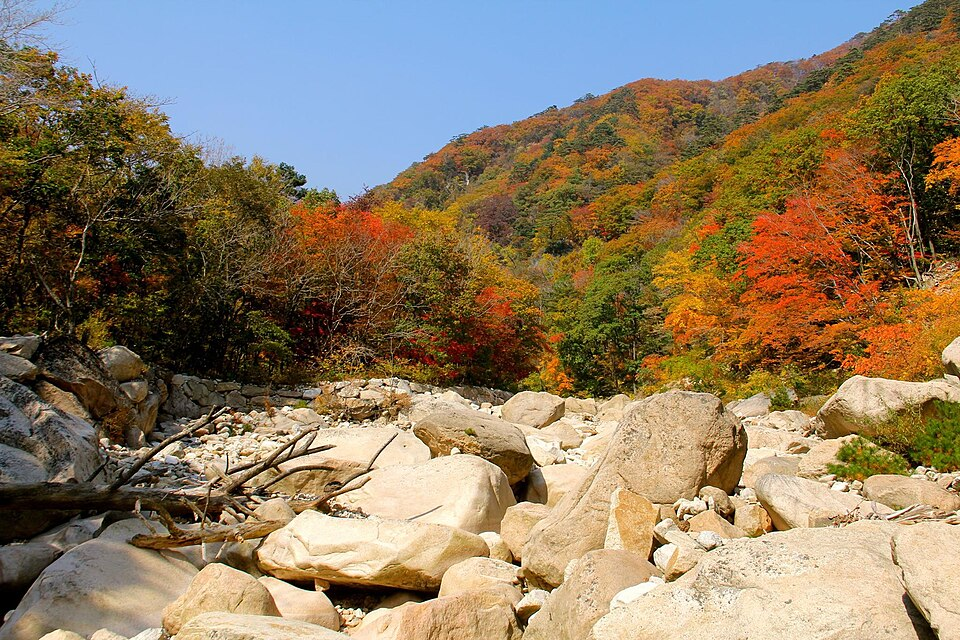
설악산 설악동 야영장
강원 속초시
설악산 국립공원에 있고, 가을 단풍 캠핑지로 소개되는 곳이에요.
자동차야영지 1박: 평일 20,000원, 주말 30,000원
가을 단풍 실제 사진과 안내 보기 (새 창)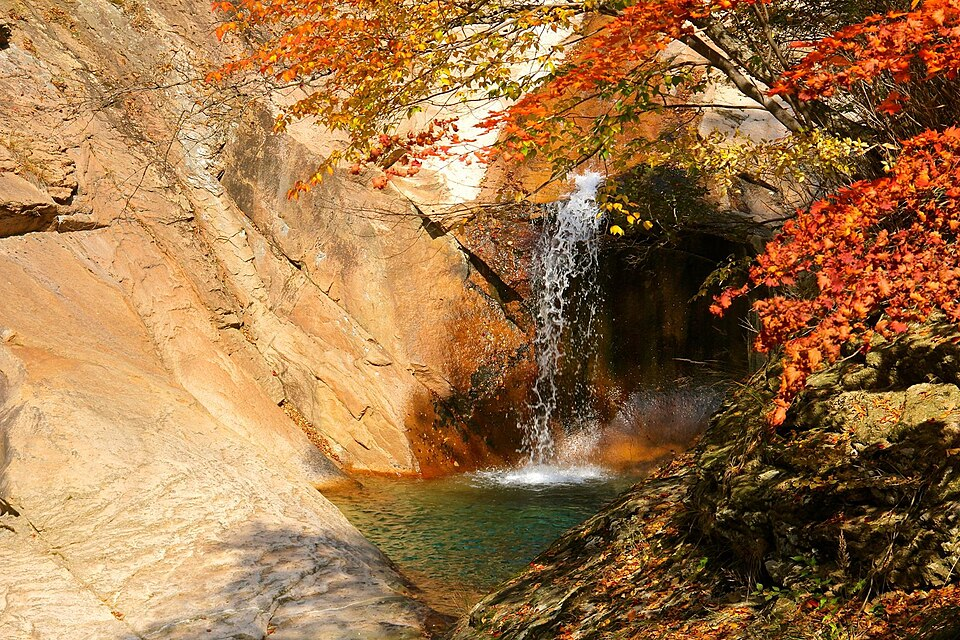
지리산 달궁 야영장
전북 남원시
지리산 달궁계곡에 있는 국립공원 야영장이에요.
자동차야영지 1박: 평일 20,000원, 주말 30,000원
지리산 계곡 실제 사진과 안내 보기 (새 창)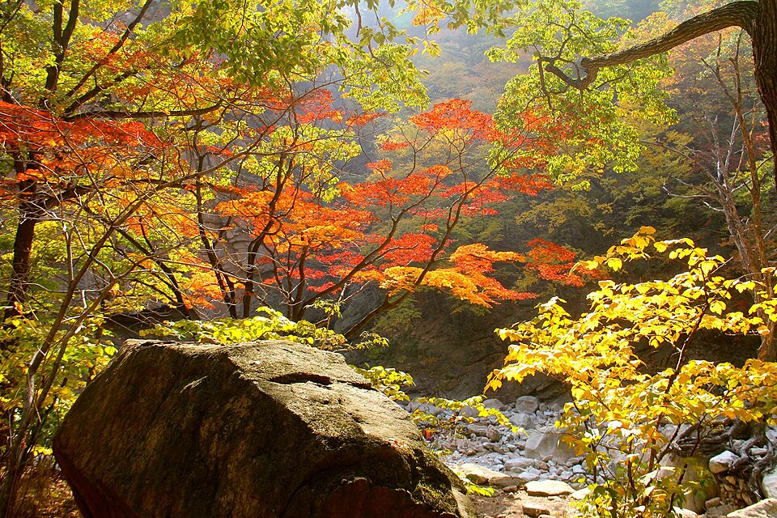
소백산 남천 야영장
충북 단양군
소백산 국립공원에 있고, 물놀이 시설이 있어요.
일반(대형)야영지 1박: 평일 9,000원, 주말 12,000원
물놀이 시설 실제 사진과 안내 보기 (새 창)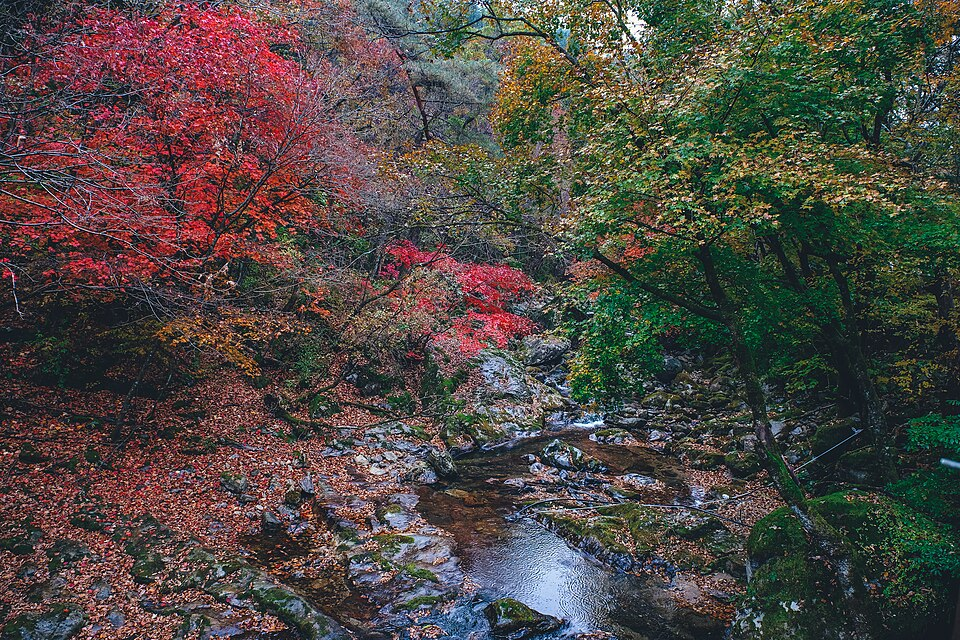
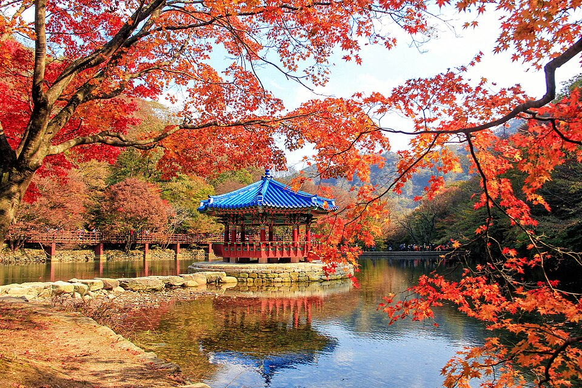
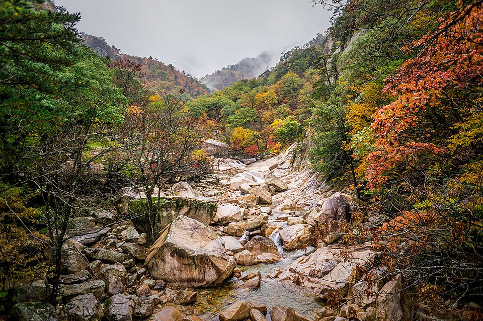
함허동천야영장
인천 강화군
캠퍼들이 캠핑의 성지라 부르는 곳이라고 소개돼요. 입장료 2,000원이 따로 있어요.
일반 1박: 13,000~18,000원
강화도 숲 실제 사진과 안내 보기 (새 창)내장산 가인 야영장
전남광주 장성군
일반 자리 48곳과 카라반 6대가 있는 국립공원 야영장이에요.
자동차야영지 1박: 평일 20,000원, 주말 30,000원
백양사 근처 실제 사진과 안내 보기 (새 창)무등산 도원 야영장
전남광주 화순군
무등산국립공원 야영장이에요. 산막텐트는 3월부터 11월까지만 운영해요.
자동차야영지 1박: 평일 20,000원, 주말 30,000원
무등산 실제 사진과 안내 보기 (새 창)장태산자연휴양림 캠핑장
대전 서구
메타세쿼이아 숲속에 있는 일반 야영장이에요.
일반 1박: 평일 20,000원, 주말 25,000원
메타세쿼이아 숲 실제 사진과 안내 보기 (새 창)작천정별빛야영장
울산 울주군
신불산과 간월산 자락의 군립 야영장이에요. 울산 시민과 군민은 요금을 할인받을 수 있어요.
오토캠핑 1박: 평일 17,000원, 비수기 주말 25,000원, 성수기 30,000원
영남알프스 실제 사진과 안내 보기 (새 창)전월산 국민여가캠핑장
세종 세종동
숲이 쾌적한 도심형 야영장이에요. 올해는 12월 21일부터 겨울 휴장에 들어가요.
오토캠핑존 1박: 평일 15,000원, 주말 20,000원
12월 21일부터 휴장 실제 사진과 안내 보기 (새 창)오대산 소금강산 야영장
강원 강릉시
오대산국립공원 야영장이에요. 성수기를 빼고 매주 수요일은 쉬어요.
자동차야영지 1박: 평일 20,000원, 주말 30,000원
소금강 실제 사진과 안내 보기 (새 창)치악산 구룡 야영장
강원 원주시
자동차 자리 51곳, 카라반 14대, 하우스 3동이 있는 국립공원 야영장이에요.
자동차야영지 1박: 평일 20,000원, 주말 30,000원
치악산 실제 사진과 안내 보기 (새 창)월악산 닷돈재1 야영장
충북 제천시
자동차 자리 113곳이 있는 월악산국립공원 야영장이에요.
자동차야영지 1박: 평일 20,000원, 주말 30,000원
월악산 실제 사진과 안내 보기 (새 창)계룡산 갑사 야영장
충남 공주시
계룡산국립공원 야영장이에요. 샤워실은 4월부터 11월까지 열어요.
자동차야영지 1박: 평일 20,000원, 주말 30,000원
계룡산 실제 사진과 안내 보기 (새 창)주왕산 상의 야영장
경북 청송군
주왕산국립공원 야영장이에요. 캠핑카, 카라반, 루프탑 텐트는 들어갈 수 없어요.
자동차야영지 1박: 평일 20,000원, 주말 30,000원
주왕산 절경 실제 사진과 안내 보기 (새 창)가야산 백운동 야영장
경북 성주군
가야산국립공원 야영장이에요. 캠핑카, 카라반, 차박은 할 수 없어요.
자동차야영지 1박: 평일 20,000원, 주말 30,000원
가야산 실제 사진과 안내 보기 (새 창)지리산 내원 야영장
경남 산청군
지리산국립공원 야영장이에요. 안전 교육 프로그램을 운영한다고 소개돼요.
일반 1박: 평일·주말 15,000원
지리산 실제 사진과 안내 보기 (새 창)가성비가 좋은 캠핑장
1박 요금이 비교적 부담 없는 곳을 모았어요. 카드 사진은 숲속 텐트와 불멍 분위기를 보여 주는 참고 사진이고, 그 캠핑장에서 찍은 사진이 아니에요. 불은 캠핑장에서 정한 곳과 방법으로만 피워 주세요.
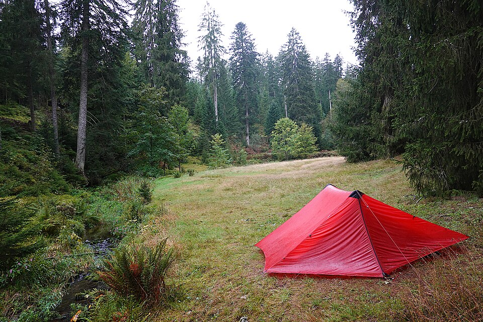
덕유산 덕유대 야영장
전북 무주군
일반 야영지만 434동이나 되는 큰 야영장이에요. 차 한 대 주차료 4,000~5,000원이 따로 있어요.
일반(중형)야영지 1박: 평일 6,000원, 주말 9,000원
자리가 많아요 실제 사진과 안내 보기 (새 창)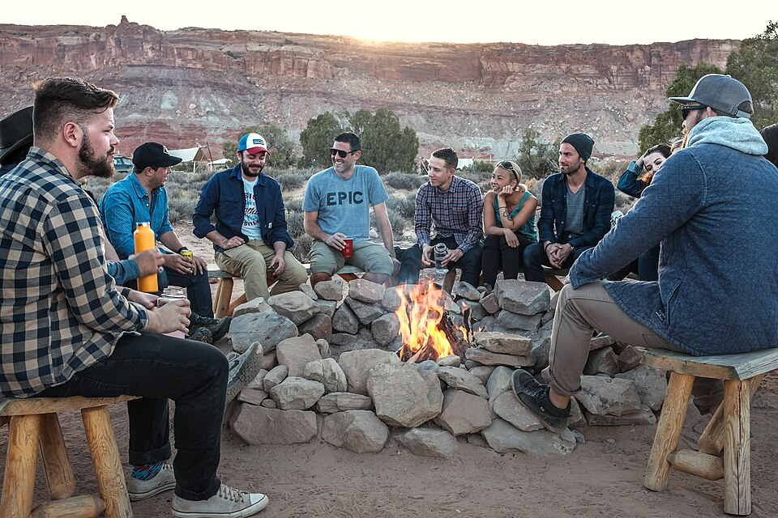
월출산 천황 야영장
전남광주 영암군
넓은 나무 데크 자리(가로 5m, 세로 8m)가 있어요. 주차료와 전기료는 따로예요.
일반(대형)야영지 1박: 평일 9,000원, 주말 12,000원
넓은 데크 자리 실제 사진과 안내 보기 (새 창)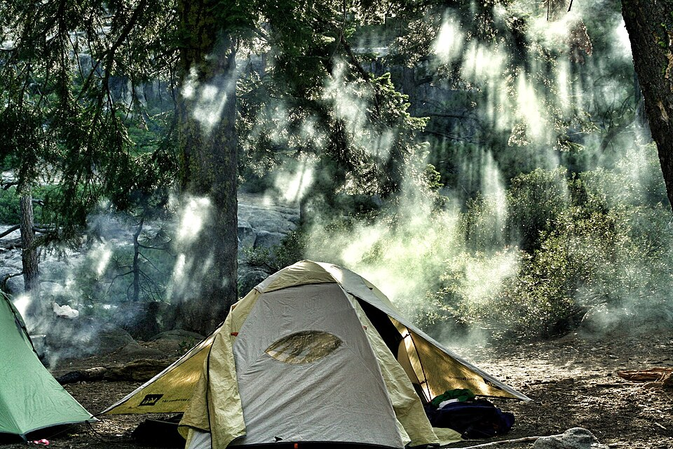
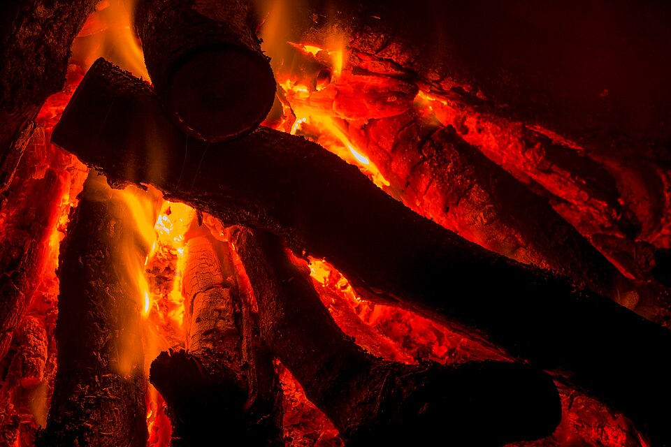
대저생태공원캠핑장
부산 강서구
유채꽃 축제로 알려진 대저생태공원 안에 있어요.
일반 1박 18,000원, 오토캠핑 25,000~30,000원
유채꽃 단지 옆 실제 사진과 안내 보기 (새 창)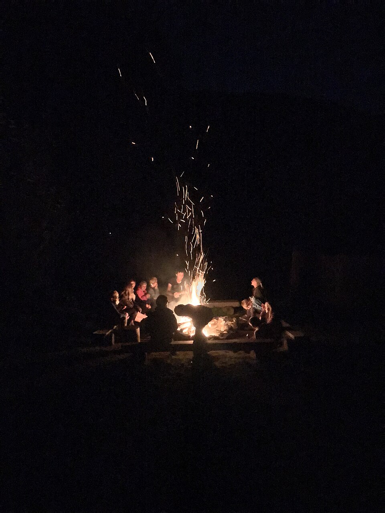
달서별빛캠프 캠핑장
대구 달서구
별 모양 조형물, 체육시설, 물놀이장이 있는 캠핑장이에요.
일반 1박: 평일 20,000원, 주말 25,000원
물놀이장 실제 사진과 안내 보기 (새 창)평화누리캠핑장
경기 파주시
임진각 관광지 안에 있는 다목적 캠핑장이에요.
일반 1박: 평일 25,000~30,000원, 주말 30,000원
임진각 관광지 실제 사진과 안내 보기 (새 창)초막골생태공원 느티나무야영장
경기 군포시
일반 캠핑과 글램핑을 함께 할 수 있어요. 군포 시민은 요금을 30% 줄여 줘요.
일반 1박: 평일 20,000원, 주말 25,000원
군포 시민 할인 실제 사진과 안내 보기 (새 창)충주 목계솔밭 캠핑장
충북 충주시
큰 규모의 친환경 캠핑장으로 소개돼요.
일반 1박: 평일 10,000~30,000원, 주말 15,000~35,000원
대규모 솔밭 실제 사진과 안내 보기 (새 창)정읍시 국민여가캠핑장
전북 정읍시
수상레저 시설과 가족 놀이 시설이 있어요. 봄, 가을, 겨울에 운영한다고 등록돼 있어요.
일반 1박: 평일 15,000원, 주말 20,000원
가족 놀이 시설 실제 사진과 안내 보기 (새 창)붉은오름 자연휴양림 숲속 야영장
제주 서귀포시
한라산 동쪽 숲속에서 숲 체험과 휴식을 함께 즐겨요.
일반 1박: 7,000~8,000원
한라산 동쪽 숲 실제 사진과 안내 보기 (새 창)